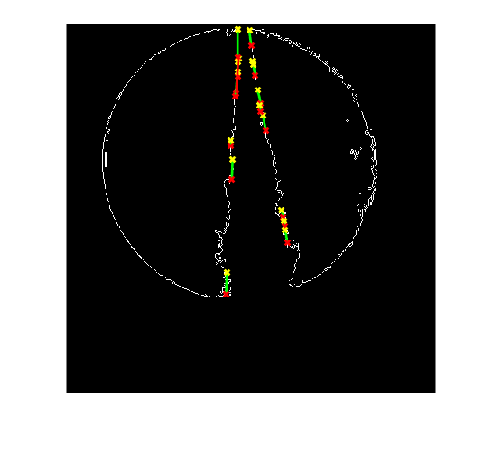

clc % Clear the command window RGB = imread("800_1.jpg"); % Read the RGB image imshow(RGB) % Display the RGB image % Convert the RGB image to grayscale I = im2gray(RGB); % Binarize the grayscale image BW = imbinarize(I); % Invert the binary image BW = ~BW; % Display the inverted binary image imshow(BW) % Detect edges in the inverted binary image using the Sobel operator BW = edge(BW,'sobel'); % Perform Hough transform on the edge-detected image [H,theta,rho] = hough(BW); % Identify peaks in the Hough transform accumulator array P = houghpeaks(H,5,'threshold',ceil(0.3*max(H(:)))); % Detect lines in the image using the Hough peaks lines = houghlines(BW,theta,rho,P,'FillGap',5,'MinLength',7); % Display the original binary image with detected lines overlayed figure, imshow(BW), hold on % Initialize variable to store the length of the longest line segment max_len = 0; % Iterate through each detected line for k = 1:length(lines) % Extract endpoints of the line xy = [lines(k).point1; lines(k).point2]; % Plot the line plot(xy(:,1),xy(:,2),'LineWidth',2,'Color','green'); % Plot the endpoints of the line plot(xy(1,1),xy(1,2),'x','LineWidth',2,'Color','yellow'); plot(xy(2,1),xy(2,2),'x','LineWidth',2,'Color','red'); % Determine the length of the line segment len = norm(lines(k).point1 - lines(k).point2); % Update the length of the longest line segment if ( len > max_len) max_len = len; xy_long = xy; end end % Highlight the longest line segment plot(xy_long(:,1),xy_long(:,2),'LineWidth',2,'Color','red');